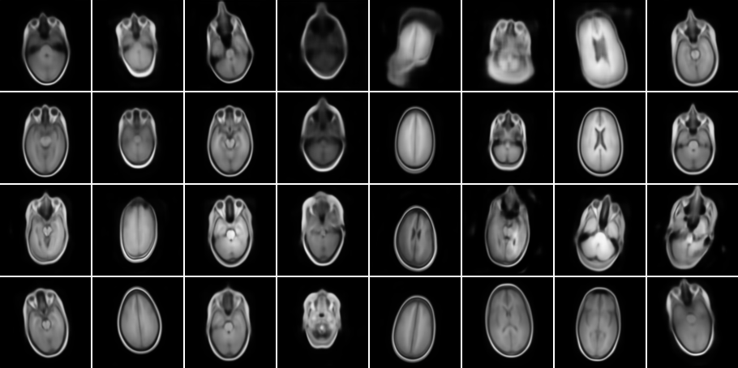

Variational Autoencoders
An autoencoder can copy images, but it can't make new ones. The Variational Autoencoder fixes that with one idea: describe every image not as a point, but as a small cloud. Let's build it up in nine steps.
By the end of this chapter you will know
- why a plain autoencoder struggles to generate, and what "gaps in the latent space" means;
- what the mean μ and spread σ are, why we sample with ε, and what the reparameterisation trick does;
- what the KL divergence does to the latent space, how β controls it, and how to generate brand-new images.
1.Why ordinary autoencoders struggle to generate
Here is the natural next thought after chapter 3: if the decoder turns 16 numbers into a brain, why not just pick 16 random numbers and get a new brain? Let's try it on the trained AE.
Feeding random numbers to the decoders (d = 16, same noise in every row)
generated
So the decoder is fine. The problem is where the random numbers land. The usual random numbers come from a standard bell curve, N(0, 1): mostly between −2 and +2. But nobody told the AE to put its codes there. On our z = 16 AE, the codes have an average size of 2.7 and a spread between 4.6 and 8.6 per number. Most random draws simply land in places the decoder has never seen.
2.Deterministic codes leave irregular gaps
A plain autoencoder maps each image to exactly one point. The loss only cares that each point can be decoded back into its own image. It says nothing about the space between points, so the model is free to scatter its codes in odd shapes, with empty regions in between. The left plot shows the real codes of the 2-number AE and VAE (dots only): the AE has long arms and gaps, the VAE a compact blob.
AE, d = 2: one point per image
test codesVAE β=0.1, d = 2: means μ of the clouds
test codesFigure 6.2. 1,500 real test slices, coloured by height in the head. Note the axis ranges: the AE's codes spread over tens of units in strange shapes; the VAE's means sit in a round region of a few units around 0, close to where N(0, I) puts its samples. A random point in the AE's box often falls in a gap; in the VAE's box it almost always lands near real data.
3.So we introduce probability distributions
The VAE's fix is to change what the encoder says. Instead of "this image is at point z", it says "this image is somewhere around μ, give or take σ". In other words, every image becomes a small Gaussian cloud in latent space:
Why does this help? Because the decoder will be trained on random points from the cloud, not on the exact centre. So the decoder has to produce a sensible image for a whole region around each μ. Neighbouring regions overlap, and the space between images gets filled with meaningful codes. Intuitively, we're forcing the latent space to be smooth.
4.What μ and σ represent
Architecturally the change is tiny: the encoder's last Linear layer is replaced by two Linear layers, one giving μ (where the cloud is) and one giving log σ² (how big it is). We predict log σ² instead of σ so the network can output any real number and σ stays positive.
One slice, as the VAE describes it (β = 0.1, d = 16)
actual runThe clouds and the prior, along one latent dimension
actual run · 2-number VAEs5.Sampling a code from the cloud
During training, we don't decode μ. We decode a random point from the cloud. Step through the picture: this is exactly what happens for every image in every training step.
The VAE forward pass, step by step
interactive · actual numbers6.The reparameterisation trick
The trick (Kingma and Welling, 2013) is to move the randomness out of the way. Instead of sampling z directly, sample a standard random vector ε that doesn't depend on anything, and then build z from it with plain arithmetic:
In simple words: "pick a random point in the cloud" becomes "start from a random point in a standard cloud, then stretch it by σ and shift it by μ". Same distribution, but now the gradients can flow into the encoder. That's step 3 in the diagram above.
7.Why we need the KL divergence
Sampling alone is not enough. The encoder could cheat: make every σ tiny (so the cloud is a point again) and spread the μ's far apart. Then we're back to a plain AE with gaps. So we add a second term to the loss that pulls every cloud toward one shared bell curve, the prior \(p(z) = \mathcal{N}(0, I)\). It's measured with the Kullback–Leibler divergence, which for Gaussians has a closed form:
And the full VAE loss is the reconstruction error plus β times the KL term:
The two terms fight a tug-of-war. Reconstruction wants every cloud small and far from the others, so each image is easy to recognise. KL wants every cloud big and sitting on the centre, so the space has no holes. What comes out is a compromise: a packed, smooth map that you can sample from.
β, the dial between sharp and tidy
β decides who wins. With small β (0.1) reconstruction wins most of the time. With β = 1 the KL term is much stronger, and it does something interesting: it switches off latent numbers. For a latent number to carry information, its clouds must move away from N(0, 1), which costs KL. If the reconstruction doesn't improve enough to pay that cost, the cheapest option is to give up on that number entirely: μ = 0 and σ = 1 for every image. Such numbers are called inactive (I count a number as active if its μ changes across images, Var[μ] > 0.01).
Active latent units
test setKL per latent number (d = 128)
test setThis partial "posterior collapse" is exactly why the β = 1 line flattens in chapter 3: beyond about 16–22 numbers, extra dimensions are just ignored, and reconstructions stop improving at about 24.9 dB on brains.
8.How the prior shapes the latent space
Let's check the effect directly. Below are the distributions of the three most-used latent numbers over all test slices, for the AE and for the two VAEs, against the prior N(0, 1).
Latent values before and after the KL term (d = 16)
5,514 test codes9.Generating completely new images
And now the payoff. Because training kept every cloud close to N(0, I), generating a new image is just two lines:
Rows 3 and 4 of Figure 6.1 were made exactly like this, and chapter 7 is entirely about generated images: how realistic they are, how temperature changes them, and how to walk between two images.
Implementation
class VAE(nn.Module):
def encode(self, x):
h = self.features(x).flatten(1)
return self.fc_mu(h), self.fc_logvar(h).clamp(-10, 10) # mu and log sigma^2
def forward(self, x):
mu, logvar = self.encode(x)
eps = torch.randn_like(mu) # epsilon ~ N(0, I)
z = mu + torch.exp(0.5 * logvar) * eps # reparameterisation trick
return self.decoder(z), mu, logvar
def vae_loss(x_hat, x, mu, logvar, beta):
D = x[0].numel() # pixels per image
recon = F.mse_loss(x_hat, x, reduction="none").flatten(1).mean(1)
kl = -0.5 * (1 + logvar - mu.pow(2) - logvar.exp()).sum(1) # closed-form KL to N(0, I)
return (recon + beta * kl / D).mean()
# generation: no encoder at all
samples = model.decoder(torch.randn(16, latent_dim))Two practical details from my runs. The KL weight is ramped up linearly over the first 10 epochs (starting with a full KL weight lets it switch off numbers before they learn anything), and validation always uses the full β so checkpoints are comparable.
Key takeaways
- AE: image → one point. VAE: image → a Gaussian cloud \(\mathcal N(\mu, \sigma^2)\).
- Training decodes random points from the cloud; the reparameterisation trick \(z=\mu+\sigma\odot\epsilon\) makes that differentiable.
- The KL term pulls every cloud toward N(0, I), which closes the gaps and makes sampling work.
- β trades sharpness for tidiness; too much β switches latent numbers off (partial posterior collapse).
References
- Kingma, Welling (2013). Auto-Encoding Variational Bayes. arXiv:1312.6114.
- Rezende, Mohamed, Wierstra (2014). Stochastic Backpropagation and Approximate Inference in Deep Generative Models. ICML.
- Higgins et al. (2017). β-VAE: Learning Basic Visual Concepts with a Constrained Variational Framework. ICLR.
- Burda, Grosse, Salakhutdinov (2016). Importance Weighted Autoencoders (active units). ICLR.
- Bowman et al. (2016). Generating Sentences from a Continuous Space (KL annealing). CoNLL.
- Kingma, Welling (2019). An Introduction to Variational Autoencoders. Foundations and Trends in ML.